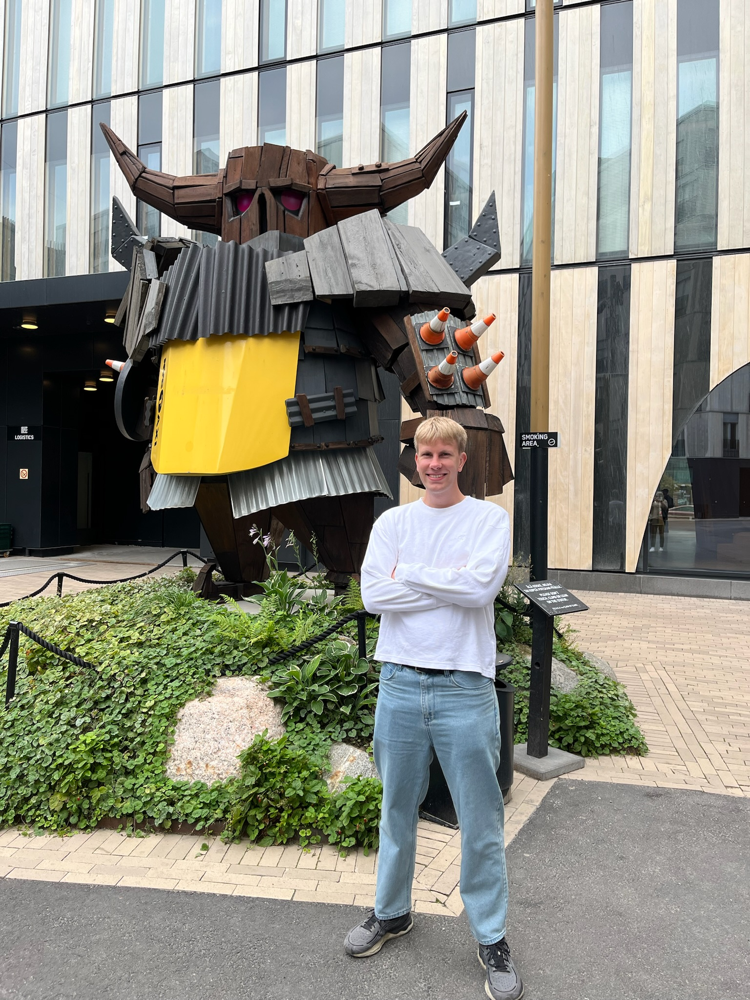
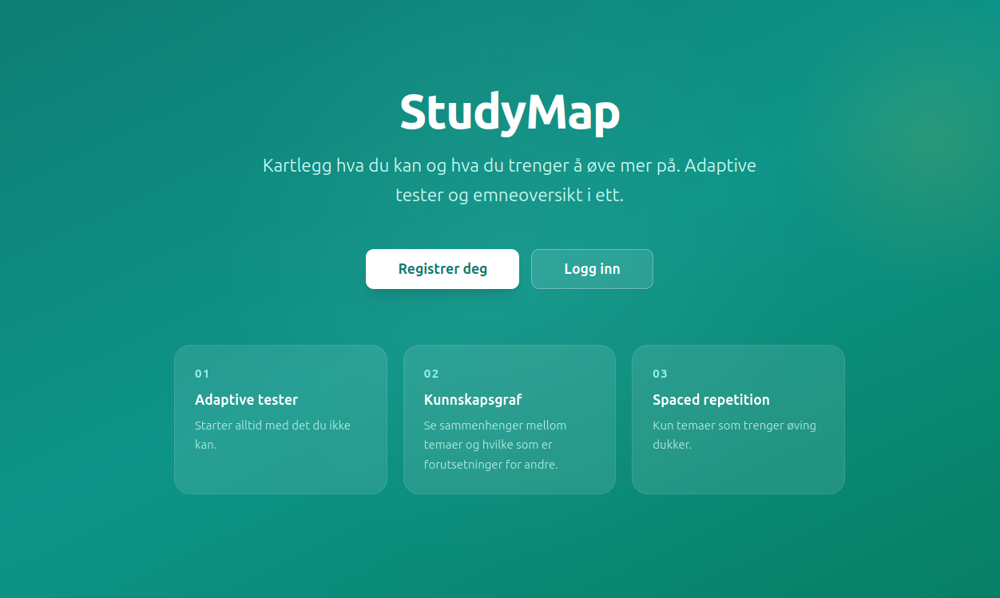
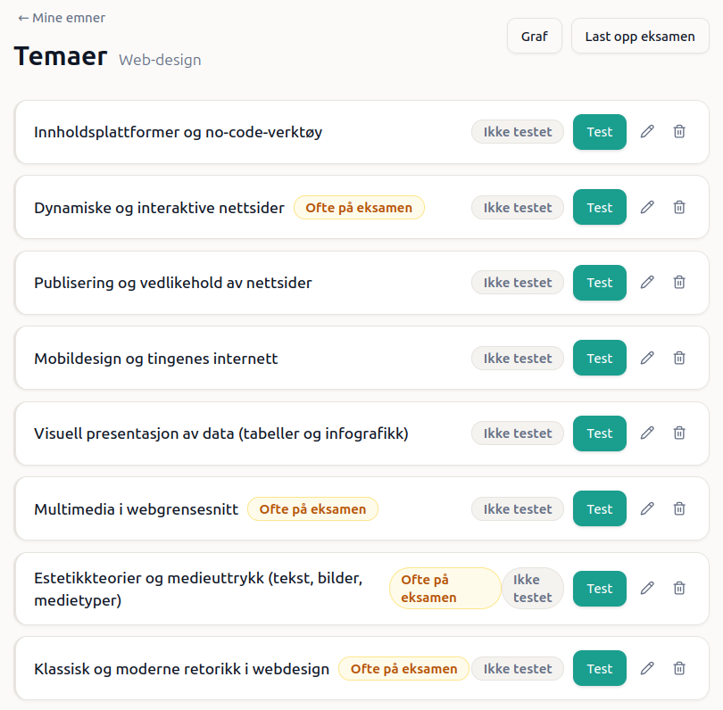
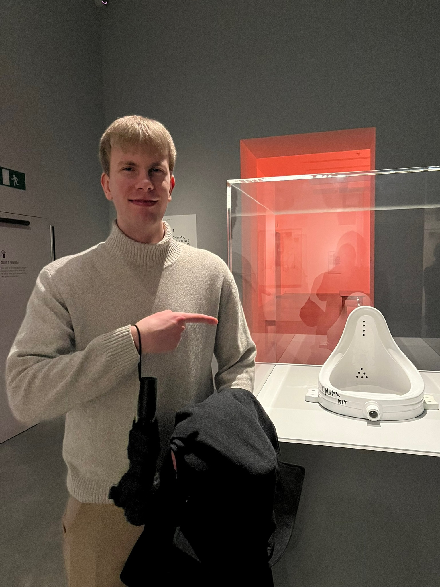
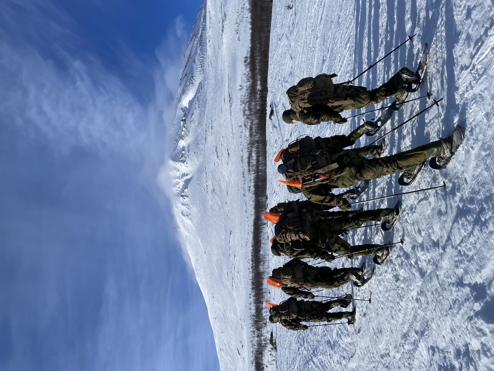
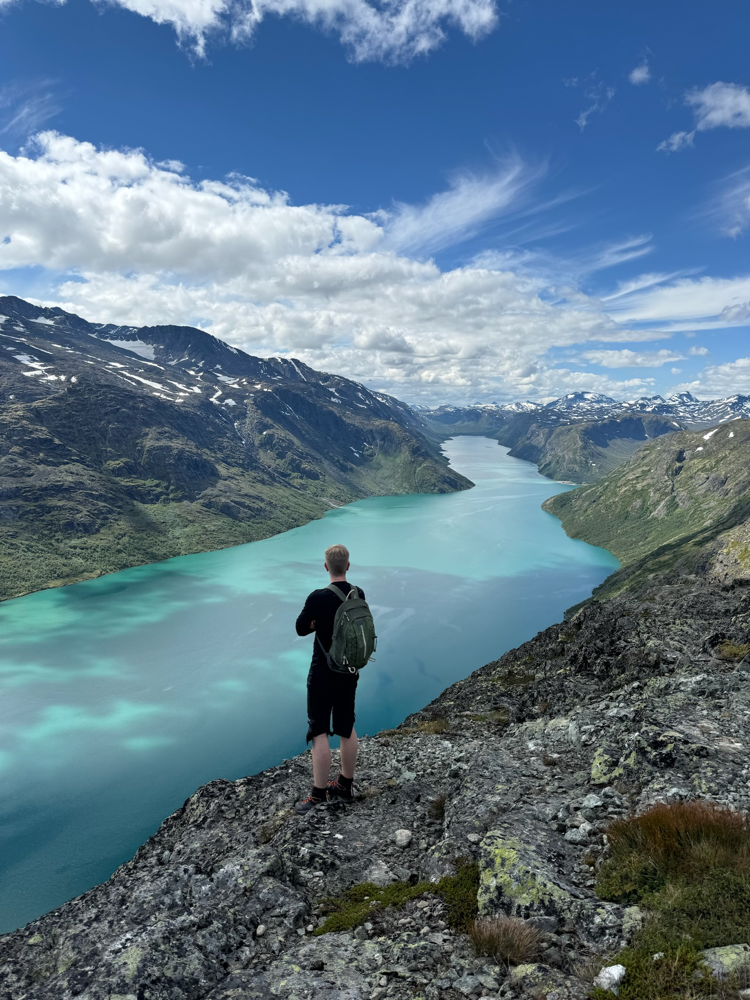

Fredrik Udengen
Master i programvareutvikling (UiB/HVL)
[TODO: kort introduksjon – hva jeg holder på med nå] Necessitatibus distinctio quis corporis explicabo autem eveniet. A ut consectetur et iusto fugiat et. Nisi eveniet commodi eveniet nobis modi ratione ad. Molestiae illum omnis labore accusamus accusamus laborum.
Prosjekter
[TODO: om Resten Ringer 2] Necessitatibus distinctio quis corporis explicabo autem eveniet. A ut consectetur et iusto fugiat et. Nisi eveniet commodi eveniet nobis modi ratione ad. Molestiae illum omnis labore accusamus accusamus laborum.
[TODO: om StudieKart] Necessitatibus distinctio quis corporis explicabo autem eveniet. A ut consectetur et iusto fugiat et. Nisi eveniet commodi eveniet nobis modi ratione ad. Molestiae illum omnis labore accusamus accusamus laborum.
test spillet · StudieKart (live) · StudieKart (kode) · Alle prosjekter


Kunst og kultur
[TODO: avsnitt om kunst og kultur] Necessitatibus distinctio quis corporis explicabo autem eveniet. A ut consectetur et iusto fugiat et. Nisi eveniet commodi eveniet nobis modi ratione ad. Molestiae illum omnis labore accusamus accusamus laborum. Necessitatibus distinctio quis corporis explicabo autem eveniet. A ut consectetur et iusto fugiat et. Nisi eveniet commodi eveniet nobis modi ratione ad. Molestiae illum omnis labore accusamus accusamus laborum.


Innsats
[TODO: avsnitt om innsats] Necessitatibus distinctio quis corporis explicabo autem eveniet. A ut consectetur et iusto fugiat et. Nisi eveniet commodi eveniet nobis modi ratione ad. Molestiae illum omnis labore accusamus accusamus laborum.
Friluftsliv
[TODO: avsnitt om friluftsliv] Necessitatibus distinctio quis corporis explicabo autem eveniet. A ut consectetur et iusto fugiat et. Nisi eveniet commodi eveniet nobis modi ratione ad. Molestiae illum omnis labore accusamus accusamus laborum.

[TODO: kontakttekst] fredrikudengen@proton.me